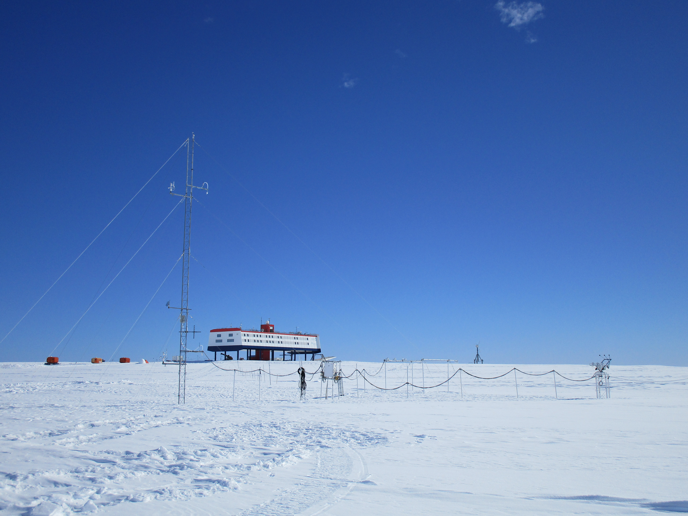

Wetter & Klima verstehen
Warum gibt es Jahreszeiten? Was misst ein Barometer? Und was ist eigentlich der Unterschied zwischen Wetter und Klima? Hier findest du alles zum Kapitel – zum Klicken, Ausprobieren und Nachlesen.
.jpg?width=1200)
.jpg){kind=link}
Wie entstehen die Jahreszeiten?
Die Erde umkreist die Sonne einmal im Jahr auf einer leicht ovalen Bahn. Entscheidend für die Jahreszeiten ist aber nicht die Entfernung zur Sonne – sondern dass die Erdachse um 23,5° geneigt ist, und zwar immer in dieselbe Richtung. Dadurch wandert der Punkt, an dem die Sonne mittags senkrecht steht (der Zenitstand), im Laufe des Jahres zwischen dem nördlichen und südlichen Wendekreis hin und her. Klicke auf eine der vier Erdpositionen:
☀️
Temperaturen, Wolken & Co. – die Wetterelemente
Meteorolog:innen beschreiben das Wetter mit sechs messbaren Größen, den Wetterelementen. Klicke auf eine Instrumenten-Karte, um mehr zu erfahren:

Wetterstation: viele Messwerte an einem Ort
Am Messfeld der Neumayer-Station werden Wetterdaten auch unter extremen Bedingungen erfasst. Die Messgeräte stehen möglichst frei, damit Gebäude die Werte wenig beeinflussen.
Foto: Messfeld Neumayer, mit Erlaubnis verwendetSo liest man die Karten unten
Jedes Wetterelement beantwortet eine einfache Frage: Wie warm? Wie feucht? Wie windig? Wie stark bewölkt? Für eine Wettervorhersage werden diese Messwerte zusammen betrachtet.
Wie entsteht Regen? Der Weg eines Wassertröpfchens
Niederschlag beginnt immer mit Verdunstung. Klicke die Nummern 1–7 der Reihe nach durch:
Wetter und Klima – wo liegt der Unterschied?
Im Alltag werden beide Wörter oft durcheinandergebracht – dabei bezeichnen sie ganz unterschiedliche Dinge.
Wetter
Der Zustand der Atmosphäre an einem Ort zu einem bestimmten Zeitpunkt – also innerhalb von Stunden oder Tagen. Wetter ändert sich ständig.
Klima
Der typische, durchschnittliche Verlauf des Wetters an einem Ort über einen langen Zeitraum (mindestens 30 Jahre). Klima ist ein statistischer Wert.
Schnelltest: Wetter oder Klima?
Arbeiten mit dem Klimadiagramm
Ein Klimadiagramm zeigt auf einen Blick, wie warm und wie feucht es an einem Ort im Jahresverlauf ist. Die rote Linie zeigt die Temperatur (linke Achse, °C), die blauen Balken zeigen den Niederschlag (rechte Achse, mm). Wichtig: 10 °C entsprechen 20 mm Niederschlag – ab 100 mm wechselt der Maßstab, damit sehr regenreiche Monate noch aufs Diagramm passen.
Übrigens: In Hannover und Nairobi bekommt jeder Monat genug Regen – die Regenkurve bleibt also immer über der Trockengrenze. In Steppen- oder Savannengebieten sinkt sie dagegen zeitweise darunter: Das markiert eine Trockenzeit.
Welche Faktoren beeinflussen das Klima?
Warum ist es am Äquator heiß und am Nordpol eisig kalt? Warum sind Winter in Niedersachsen milder als in Kanada, obwohl beide etwa auf gleicher geografischer Breite liegen? Fünf Faktoren spielen zusammen. Klicke eine Karte an:
Die Klimazonen der Erde
Von den Tropen bis zu den Polen ändert sich das Klima mit der geografischen Breite. Für den Unterricht reicht zuerst ein vereinfachtes Modell mit fünf Breitenzonen, die es sowohl auf der Nord- als auch auf der Südhalbkugel gibt.

Erst global orientieren, dann einzelne Orte vergleichen
Die Karte zeigt die Breitenzonen als grobe Orientierung. Innerhalb einer Zone unterscheiden sich Orte trotzdem, weil Meer, Höhenlage, Winde und Meeresströmungen mitwirken.
Karte: PhysicsScotland, Wikimedia Commons, CC BY-SA 4.0.png){kind=link}
Teste dein Wissen
8 Fragen zu allem, was du oben gelesen hast.